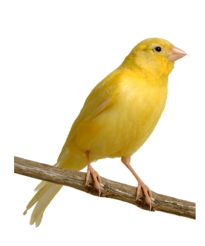
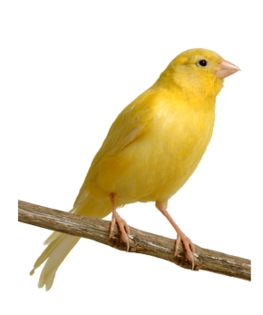
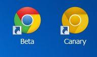
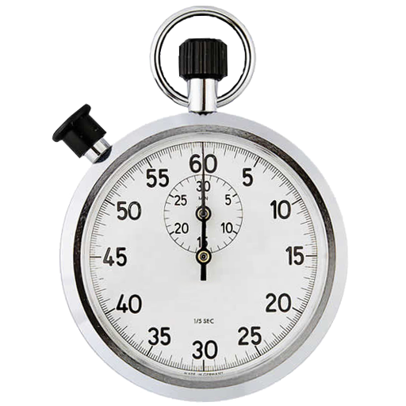
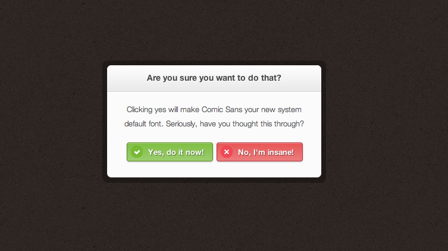

The Future of The Web Platform
and some recent features
August 2013
Presented by
Mitko Bonev Senior developer in the StageIt team
Software Setup
-
Chrome Canary
 

- bleeding-edge build
- runs side-by-side with your other Chrome installation 
-
Chrome flags turned on
- experimental Web Platform features
- Developer Tools experiments
High-precision timers
Timer Specifications
-
User Timing - measure js code performance
- PerformanceMark - named timestamp since navigationStart
- PerformanceMeasure - named duration between two marks
-
Navigation Timing - measure page navigation
- PerformanceNavigation - type of page navigation
- PerformanceTiming - page navigation timestamps
-
Resource Timing - measure resources timings
- PerformanceResourceTiming - resource initiator and timestamps
<dialog> Element
Dialog Features
- Centered in the Viewport
- Can be Modal
- Always on Top
- Anchored to Element or MouseEvent
Thank You!
slides: github.com/dsbonev/web-platform-features-presentation